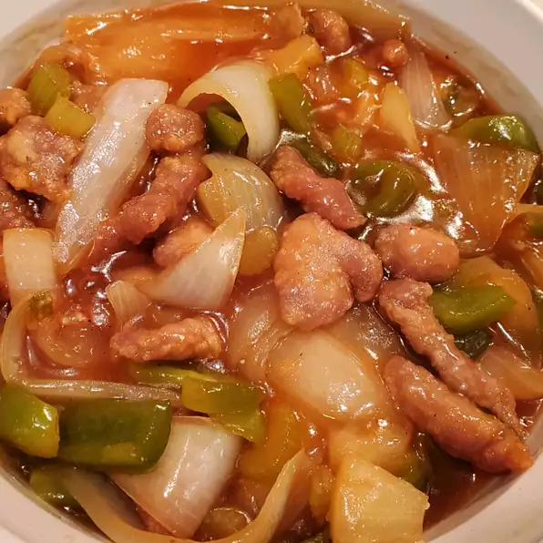

Sweet and Sour Pork

Description
This sweet and sour pork recipe is from my husband's grandmother, who was Chinese. She taught me how to make this recipe — it's the way Gramma made sweet and sour dishes her whole life until she died at age 94. The secret is apple cider vinegar.
Ingredients
- 1 pound pork butt, cut into 1 inch cubes
Marinade Ingredients
- 1 teaspoon soy sauce
- 1 teaspoon salt
- ¼ teaspoon white sugar
- 1 egg white
- 2 green onions, chopped
Frying Ingredients
- 1 quart vegetable oil for frying
- ½ cup cornstarch
Stir-fry Ingredients
- 1 tablespoon vegetable oil
- 3 stalks celery, cut into 1/2 inch pieces
- 1 medium green bell pepper, cut into 1 inch pieces
- 1 medium onion, cut into wedges
- 1 pinch white sugar, or to taste
- salt to taste
- 1¼ cups water, divided
- ¾ cup white sugar
- ⅓ cup apple cider vinegar
- ¼ cup ketchup
- ½ teaspoon soy sauce
- ¼ teaspoon salt
- 1 (8 ounce) can pineapple chunks, undrained
- 2 tablespoons cornstarch
Directions
- Place cubed pork in a medium bowl and season with soy sauce, salt, and sugar for marinade. Add egg white and green onions and mix until well-combined. Cover and place in the refrigerator for at least 1 hour.
- Heat 1 quart oil to 365 degrees F (185 degrees C) in a large, heavy saucepan or deep fryer.
- Coat pork with cornstarch and fry in hot oil until evenly browned, about 10 minutes. Drain on paper towels and set aside.
- Heat oil for vegetables in a wok over medium heat. Stir in celery, bell pepper, and onion; cook until tender, about 5 minutes. Season with pinch of sugar and salt. Remove from heat and set aside.
- Mix 1 cup water, 3/4 cup sugar, apple cider vinegar, ketchup, soy sauce, and salt in a large saucepan; bring to a boil over high heat.
- Stir in cooked pork, celery mixture, and pineapple chunks with juice. Return to a boil, then mix in remaining1/4 cup water and cornstarch. Cook until thickened and warmed through, about 2 minutes.
Finished!